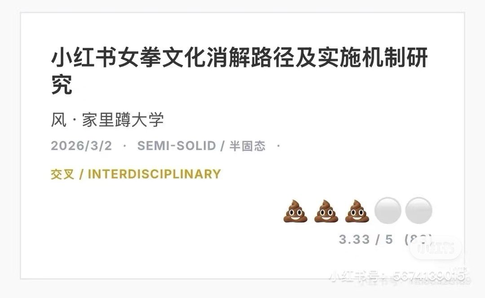
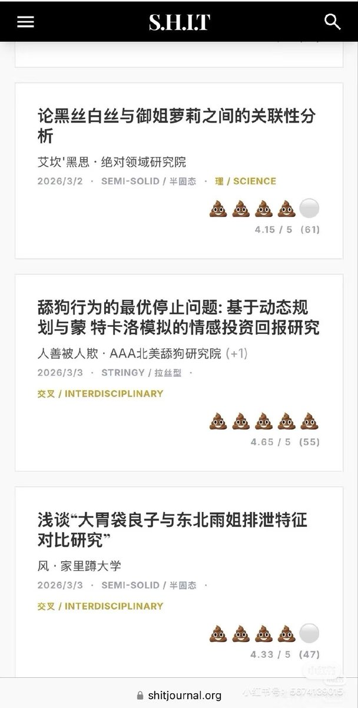
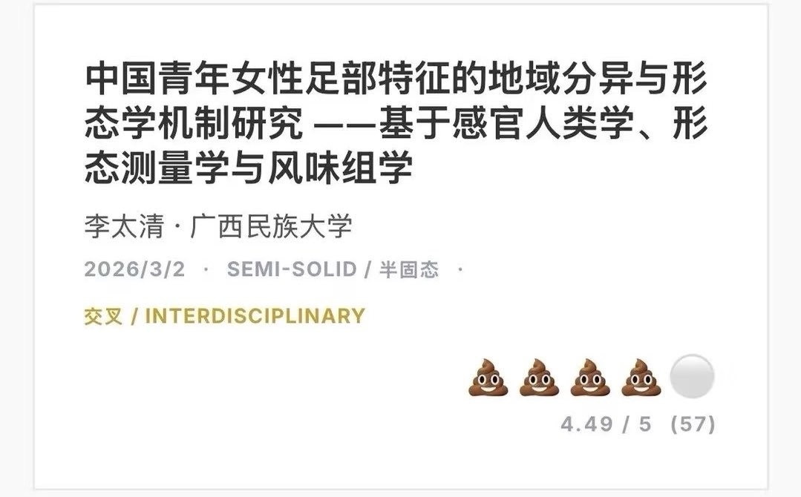

@wangwihd 这底刊的投稿内容就是以猎奇为卖点，无论发上去什么我都不奇怪。显然他现在也意识到再这么自由下去就不只是内容恶臭猎奇的问题，恐怕说不定什么时候就会有人触碰到一些禁忌的话题，所以把投稿关闭了。
他所谓“筛选稿件的同时还能实现去中心化”的机制我是一点也不看好，我们可以拭目以待。

他所谓“筛选稿件的同时还能实现去中心化”的机制我是一点也不看好，我们可以拭目以待。



呃，我个人绝对不会支持shit期刊的理由如下，而且让它火出圈的好几篇文章很明显都是女性投稿的，这是一个两性共同存在的场所，但是皮下在称呼受众时只会用兄弟们，经多次提醒也未更改，女性作者在这里又变成隐形人了。 https://t.co/d6IO7F9npM